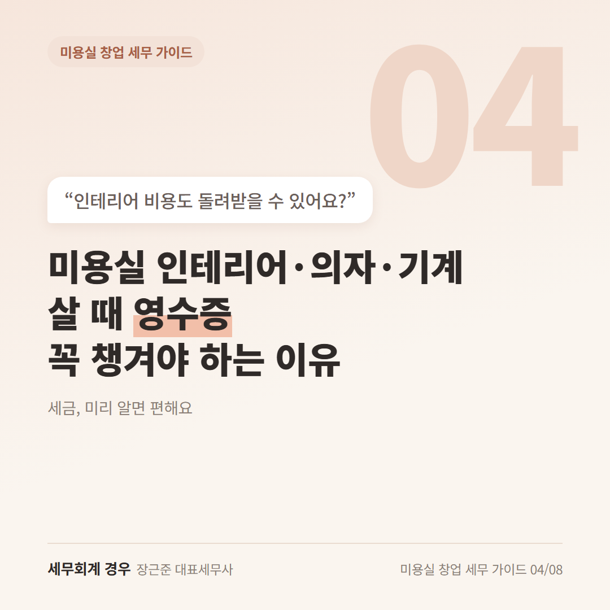
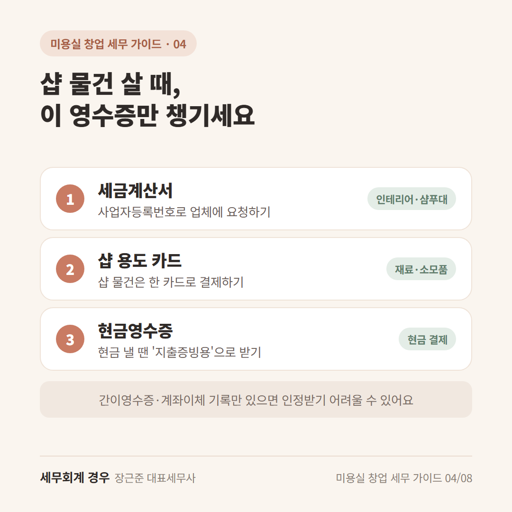
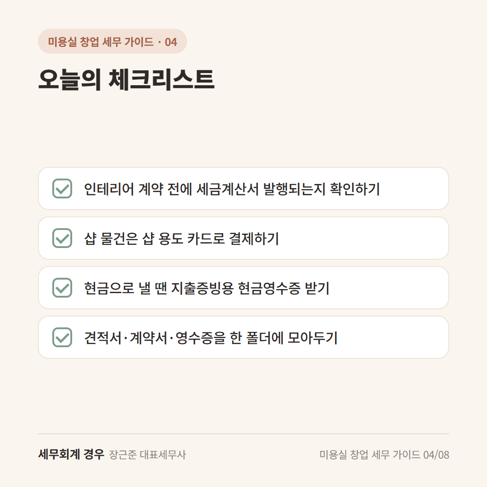

미용실 창업 세무 가이드 · 4번째 글
미용실 인테리어·의자·기계 살 때 영수증 꼭 챙겨야 하는 이유

인테리어 견적서를 받았는데, 맨 아래에 "부가세 별도"라고 적혀 있죠?
"여기서 돈이 더 나가는 거야?" 하고 한숨 쉬셨을 거예요.
그런데 미용실 인테리어 부가세는 영수증만 잘 챙기면 돌려받을 수 있는 돈이에요.
오늘은 어떤 영수증을 챙겨야 하는지만 알려드릴게요.
1. 인테리어 때 낸 부가세, 돌려받을 수 있어요
일반과세자라면 샵을 꾸미면서 낸 부가세를 돌려받을 수 있어요.
이걸 부가세 환급(샵 물건 살 때 낸 부가세를 돌려받는 것)이라고 해요.
인테리어처럼 큰돈이 들어간 경우엔
신고 때까지 기다리지 않고 조금 빨리 돌려받는 방법도 있어요.
이 부분은 시기와 조건이 있어서 상담으로 확인하시는 게 좋아요.
(간이과세자는 돌려받는 환급이 안 돼요. 간이과세자 편을 함께 봐주세요.)
2. 이 영수증들만 챙기세요
돌려받으려면 "샵에서 쓴 돈"이라는 증거가 필요해요.
아래 셋 중 하나로 남기면 돼요.
- 세금계산서: 인테리어 업체, 샴푸대·의자 업체에 사업자등록번호로 요청하기
- 카드 결제: 샵 용도로 쓰는 카드로 결제하기
- 현금영수증: 현금으로 낼 땐 "지출증빙용"으로 받기
간이영수증이나 계좌이체 기록만 있으면 인정받기 어려울 수 있어요.
"현금으로 하면 싸게 해줄게요"라는 말을 들으면, 영수증을 받을 수 있는지 먼저 물어보세요.
3. 세금 계산할 때 비용으로도 들어가요
인테리어, 샴푸대, 의자, 드라이기, 열펌 기계 같은 것들은
종합소득세 계산할 때 "쓴 돈"으로 들어가요.
한 번에 다 빼는 게 아니라 몇 년에 나눠서 비용으로 넣는 경우가 많아요.
그래서 영수증을 몇 년 동안 잘 보관해두는 게 중요해요.

오늘의 체크리스트

- 인테리어 계약 전에 세금계산서 발행되는지 확인하기
- 샵 물건은 샵 용도 카드로 결제하기
- 현금으로 낼 땐 지출증빙용 현금영수증 받기
- 견적서·계약서·영수증을 한 폴더에 모아두기
자주 묻는 질문
사업자등록 전에 산 물건도 인정되나요?
주민등록번호로 세금계산서를 받아두면 인정되는 경우가 있어요. 기간 조건이 있어서 미리 물어보시는 게 좋아요.
가게 보증금도 비용이 되나요?
보증금은 나중에 돌려받는 돈이라 비용이 아니에요. 매달 내는 월세는 비용이 되니 세금계산서를 받아두세요.
마무리
미용실 인테리어 부가세는 영수증 한 장 차이로 돌려받느냐가 달라져요.
공사 시작 전에 계약서와 견적서를 들고 한 번 편하게 물어보세요.
개인 상황에 따라 달라질 수 있으니 자세한 내용은 상담으로 확인하세요.